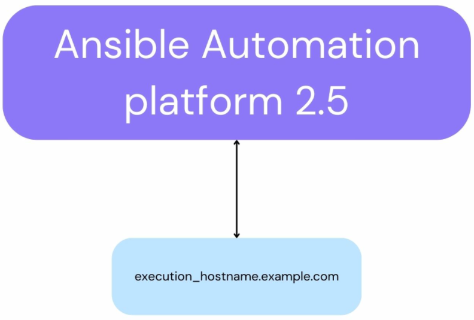
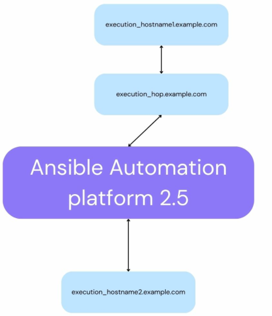

Automation Mesh Example
Let’s take a closer look at Automation Mesh in RPM and Containerized installations.
RPM
Mesh configuration includes defining connections between nodes, which is also known as peering. Peer relations are defined within the [automationcontroller] and [execution_nodes] groups or using the [automationcontroller:vars] or [execution_nodes:vars] sections with peers=<node-name-to-connect-too> setting.
To understand the concept better, let’s look at two deployment scenarios:
-
Basic example of a Controller node connected to an Execution node with one Unified UI node and the Database node. This is the minimum possible configuration and all these nodes are mandatory.
On the diagram above Ansible automation platform 2.5 square represents all four nodes: Controller, Execution, Unified UI and Database. Below is an example of the inventory for this scenario:
[automationcontroller]
control_hostname.example.com
[automationcontroller:vars]
node_type=hybrid
peers=execution_nodes
[execution_nodes]
execution_hostname.example.comIn this example node_type for Controller node is set to hybrid which means it can also act as an Execution node. This hybrid node is peered to an additional Execution node.
-
More advanced structure with one more Execution node connected via Hop node.

[automationcontroller]
control_hostname.example.com
[automationcontroller:vars]
node_type=hybrid
peers=execution
[execution_nodes]
execution_hostname1.example.com peers=proxy
execution_hostname2.example.com
execution_hop.example.com node_type=hop
[execution]
execution_hostname2.example.com
[proxy:vars]
peers=automationcontroller
[proxy]
execution_hop.example.comIn the inventory configuration we see that the additional Execution node is peered to the proxy group, which contains Hop node.
For more information on the different types of architectures refer to automation mesh.
Containerized
In Containerized can be set to either tcp or udp. By default, the nodes in the [execution_nodes] group are added as peers to nodes from the [automationcontroller] group. This can be overwritten with the receptor_peers variable. environments to create Execution or Hop nodes we need to use the `receptor_type value which can be either execution or hop. `receptor_protocol`
For example, for execution node:
[execution_nodes]
execution_hostname.example.comFor hop node:
[execution_nodes]
execution_hostname2.example.com
hop_hostname2.example.com receptor_type=hop receptor_peers='["execution_hostname2.example.com"]'| In this example, the concept behind Execution and Hop nodes remains the same but the deployment will be different since we are using receptor_type instead of node_type. |